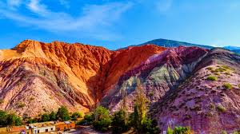
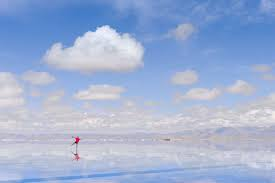
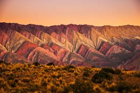
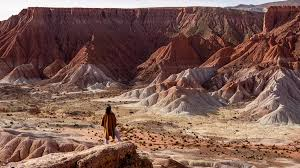

Cultura
Purmamarca y el Cerro de los Siete Colores
Un destino icónico del norte argentino lleno de historia y tradición.

Un destino icónico del norte argentino lleno de historia y tradición.

Un espectáculo natural que deslumbra a cada visitante.

La montaña de los catorce colores, un destino imperdible.

El paisaje que parece haber salido del mismo Marte.
Un lugar mágico que volvería a visitar sin dudar.
La cultura y los paisajes de Jujuy son incomparables.